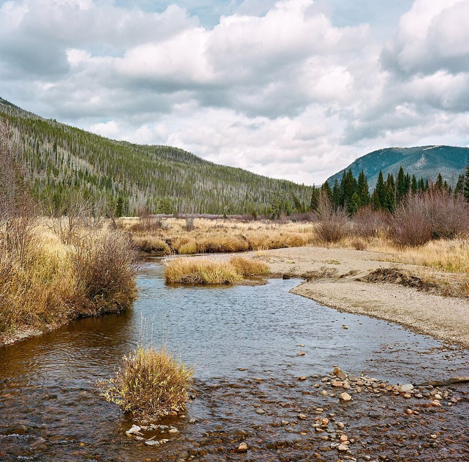
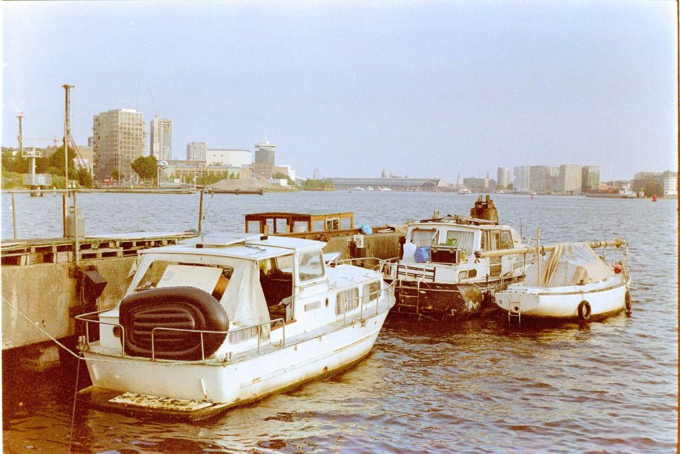
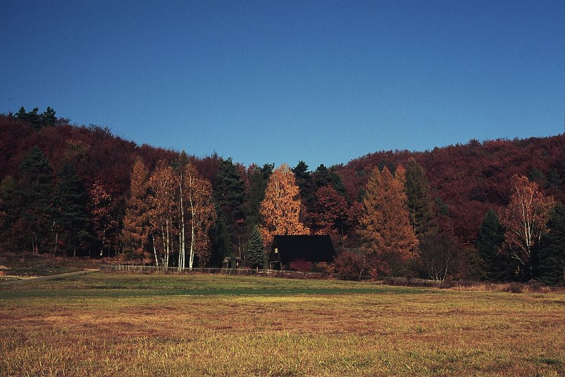
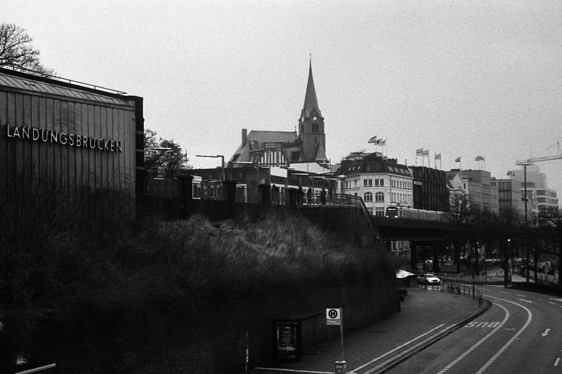
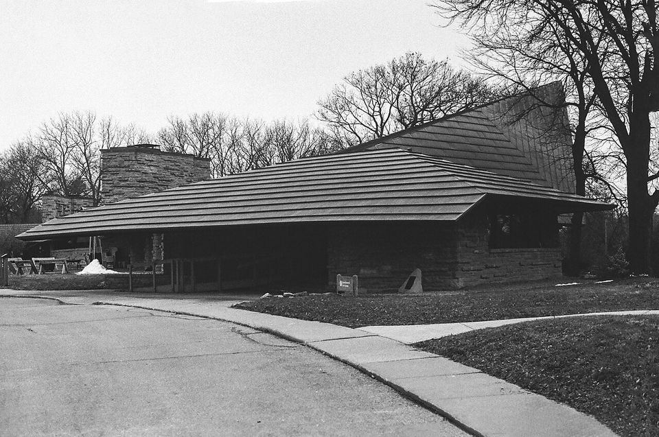

필름에 관한
거의 모든 것
카메라를 고르는 일부터 필름을 넣고, 찍고, 현상하고, 인화하고, 서랍에 넣어두기까지. 처음 필름을 손에 쥔 사람이 한 롤을 끝까지 완주할 수 있도록 필요한 정보를 한 장의 밀착 인화지처럼 펼쳐두었습니다.
처음이라면 · 카메라
자동 똑딱이 하나초점·노출을 카메라가 알아서. 찍는 재미부터.
처음이라면 · 필름
ISO 200~400 컬러 네거티브관용도가 넓어 실패가 적고, 어느 현상소든 받습니다.
처음이라면 · 조건
맑은 날 낮, 야외에서빛이 충분하면 대부분 잘 나옵니다.
처음이라면 · 마무리
현상 + 스캔 맡기기파일로 받아 보고, 마음에 드는 컷만 인화.
▸ 1 1A
Camera
카메라 판형과 형식
필름 카메라는 두 가지 기준으로 나눠 보면 쉽습니다. 어떤 크기의 필름을 쓰는지(판형), 그리고 어떤 방식으로 보고 초점을 맞추는지(형식). 판형은 화질과 롤당 장수를, 형식은 찍는 경험을 결정합니다.
판형별 실제 크기 1 : 1.5 scale, mm
135는 35mm 필름의 규격 번호, 120은 중형 필름(롤 필름)의 규격 번호입니다. 장수는 35mm 36매 롤, 120 롤 기준입니다. 35mm 롤은 24매짜리도 있습니다.
형식별 카메라
중고로 살 때 확인할 것
- 셔터 — 1초, 1/30, 1/500처럼 서로 다른 속도로 눌러 보고 소리 길이가 확실히 다른지 들어봅니다. 느린 속도에서 끝까지 닫히지 않으면 수리 대상입니다.
- 뒷판을 열고 렌즈 들여다보기 — 셔터를 B(벌브)나 1초에 두고 누른 채 렌즈 반대편을 플래시로 비춰 봅니다. 거미줄 같은 곰팡이, 뿌연 흐림, 기름 자국을 확인합니다.
- 라이트 씰 — 뒷판 홈에 있는 검은 스펀지가 끈적이거나 부스러지면 빛샘의 원인이 됩니다. 교체는 저렴하고 직접도 가능합니다.
- 노출계와 배터리 — 오래된 카메라 중엔 단종된 수은전지(PX625 등)를 쓰는 기종이 있어 어댑터가 필요합니다. 배터리 규격부터 검색해 보세요.
- 자동 똑딱이는 전자 부품 — 액정이나 모터가 고장 나면 수리가 어렵거나 불가능합니다. 반품·보증 조건을 꼭 확인합니다.
▸ 2 2A
Film stock
필름 무엇을 넣을까
필름은 크게 네 갈래입니다. 색이 반대로 찍히는 컬러 네거티브, 은 입자로만 그리는 흑백, 그대로 보이는 슬라이드(포지티브), 그리고 영화 촬영용 필름을 잘라 파는 시네 필름. 각각 현상하는 약품과 공정이 다릅니다.
컬러 네거티브 C-41
현상하면 색이 반전되고 주황빛 베이스(오렌지 마스크)가 깔립니다. 노출 관용도가 넓어 2~3스톱 오버도 살려낼 수 있습니다. 가장 흔하고, 가장 맡기기 쉽습니다.
흑백 B&W
빛을 받은 은 입자만 남는 가장 오래된 방식. 상온 20°C에서 집에서 현상할 수 있어 자가현상 입문용입니다. 푸시(증감) 현상에도 강합니다.
슬라이드 E-6
현상하면 눈에 보이는 그대로의 양화가 나옵니다. 색이 선명하지만 관용도가 좁아 노출을 정확히 맞춰야 합니다. 라이트박스에 올려 보는 맛이 있습니다.
영화용 ECN-2
영화 필름을 35mm 카트리지에 재포장한 것. 뒷면 검은 렘젯 층 때문에 일반 C-41 기계에 넣으면 안 됩니다. 받는 현상소인지 먼저 확인하세요.
필름마다 다른 얼굴 실제 필름 스캔





같은 필름도 노출, 현상, 스캔에 따라 결과가 달라집니다. 각 필름의 대략적인 성향을 보는 참고용으로 봐주세요.
| 필름 | ISO | 공정 | 판형 | 성격 |
|---|
생산·수입 상황에 따라 단종되거나 품귀인 필름이 자주 생깁니다. 판형 표기는 대표적으로 나오는 규격 기준입니다.
ISO는 무엇을 뜻하나
ISO(감도)는 필름이 빛에 반응하는 정도입니다. 숫자가 두 배가 되면 필요한 빛은 절반, 즉 한 스톱 차이입니다. 100은 맑은 날 야외, 400은 흐린 날과 그늘까지 두루, 800 이상은 실내와 저녁을 위한 감도입니다. 감도가 높을수록 입자(그레인)가 굵어집니다.
디지털과 가장 다른 점은 한 롤을 다 찍을 때까지 ISO를 바꿀 수 없다는 것입니다. 오늘 어디서 찍을지 생각하고 필름을 고르세요.
▸ 3 3A
Exposure
촬영 빛을 재는 법
노출은 조리개, 셔터 속도, 감도 세 가지로 정해집니다. 필름에선 감도가 고정이니 실제로 조절하는 건 조리개와 셔터 두 개뿐입니다. 하나를 한 스톱 열면 다른 하나를 한 스톱 닫아 같은 노출을 유지합니다.
조리개 f값
- 숫자가 작을수록 많이 열림, 빛이 많이 들어옴
- 한 칸(f/2.8→f/4)마다 빛은 절반
- 열수록 배경이 흐려지고(얕은 심도), 닫을수록 앞뒤가 다 선명
셔터 속도
- 1/125은 125분의 1초
- 한 칸(1/125→1/250)마다 빛은 절반
- 손으로 들고 찍을 땐 1/60 이상, 또는 1/(렌즈 초점거리) 이상
- 빠를수록 움직임이 멈춰 보임
써니 16 계산기
노출계 없이 찍는 법맑은 날엔 f/16에 셔터 1/ISO. 노출계가 없거나 고장 났을 때 쓰는 오래된 규칙입니다. 필름 감도와 빛 상황을 고르면 같은 노출이 되는 조합을 모두 보여줍니다.
테두리 강조 = 이 상황의 기준 조리개 · 빨간 글씨 = 손떨림 주의 · 흐린 칸 = 셔터 범위 밖
네거티브는 그림자에, 슬라이드는 하이라이트에
컬러 네거티브와 흑백은 노출 부족에 약하고 과다에 강합니다. 어두운 부분에 정보가 없으면 스캔해도 살아나지 않지만, 한두 스톱 넘친 건 대부분 복구됩니다. 그래서 애매할 땐 한 스톱 더 주라는 말이 있습니다.
슬라이드는 반대입니다. 하이라이트가 날아가면 끝이라 밝은 부분 기준으로 맞추고, 브라켓팅(±1/2스톱씩 여러 장)으로 보험을 듭니다.
35mm 필름 넣기 수동 SLR 기준
- 그늘에서 뒷판 열기. 직사광선 아래에서는 필름이 빛을 먹을 수 있습니다. 대부분 되감기 노브를 위로 끝까지 당기면 뒷판이 열립니다.
- 필름을 왼쪽 칸에 넣고 되감기 노브를 눌러 내려 고정합니다.
- 리더(앞쪽 좁은 부분)를 오른쪽 감김 축의 홈에 끼웁니다. 필름 아래위 구멍이 톱니(스프로킷)에 걸리는지 봅니다.
- 한 번 감고 셔터. 뒷판을 연 채로 필름이 팽팽하게 감기는지 확인합니다.
- 뒷판을 닫고 카운터가 1이 될 때까지 공셔터 2~3번. 앞부분은 빛을 먹은 구간입니다.
- 감을 때 되감기 노브가 같이 도는지 확인. 돌지 않으면 필름이 안 감기고 있는 것입니다. 36장을 찍었는데 아무것도 없는 사고 대부분이 여기서 생깁니다.
- 다 찍으면 되감기. 바닥의 되감기 버튼을 누르고 노브를 화살표 방향으로 돌립니다. 손이 갑자기 가벼워지면 다 감긴 것. 그 전에는 절대 뒷판을 열지 않습니다.
결과물로 보는 흔한 실수
| 네거티브 상태 | 원인 | 다음엔 |
|---|---|---|
| 롤 전체가 투명 | 필름이 감기지 않았거나 셔터가 열리지 않음 | 장전 후 되감기 노브가 도는지 확인 |
| 롤 전체가 새까맣게 덮임 | 뒷판을 열어 빛에 노출됨 | 되감기 전엔 뒷판 금지 |
| 붉은·주황 빛줄기 | 빛샘. 라이트 씰 열화나 뒷판 틈 | 라이트 씰 교체, 장전은 그늘에서 |
| 얇고 그림자가 탁함 | 노출 부족 | 한 스톱 더 주기, 감도 높은 필름 |
| 전체가 흐릿하게 번짐 | 손떨림, 느린 셔터 | 1/60 이상, 몸을 벽에 기대기 |
| 사진 일부가 검게 잘림 | 플래시 동조 속도 초과 (포컬플레인 셔터) | 플래시 쓸 땐 X 표시 속도 이하 |
| 레인지파인더에서 위쪽이 잘림 | 시차(패럴랙스), 가까이서 찍음 | 근접 시 프레임 보정선 사용 |
▸ 4 4A
Development
현상 잠상을 꺼내는 일
찍은 필름에는 아직 눈에 보이지 않는 잠상(潛像)만 있습니다. 현상액이 빛 받은 은 결정을 금속 은으로 바꾸고, 정착액이 남은 은염을 씻어내야 비로소 빛 아래 꺼낼 수 있는 네거티브가 됩니다.
현상소에 맡기기
- 컬러(C-41)는 대부분 이쪽이 정답. 38°C 유지가 까다롭습니다
- 현상 + 스캔을 함께 받는 게 일반적
- 슬라이드(E-6), 영화용(ECN-2)은 취급하는 곳이 적어 기간이 더 걸림
집에서 현상하기
- 흑백은 상온에서 가능하고 도구도 단순
- 롤당 비용이 크게 줄고, 현상 시간으로 대비를 조절
- 컬러도 C-41 키트로 가능하지만 온도 관리가 핵심
- 폐액 처리를 꼭 지켜야 함
공정 비교
| 공정 | 대상 | 온도 | 단계 | 난이도 |
|---|---|---|---|---|
| B&W | 흑백 필름 | 20°C | 현상 → 정지 → 정착 → 수세 → 웨팅 | 입문 |
| C-41 | 컬러 네거, XP2 같은 C-41 흑백 | 37.8°C | 발색현상 → 표백·정착(블릭스) → 수세 → 안정 | 중간 |
| E-6 | 슬라이드 | 38°C | 1차 현상 → 반전 → 발색 → 표백 → 정착 등 6단계 내외 | 높음 |
| ECN-2 | 영화용 네거 | 41°C | 렘젯 제거 → 발색현상 → 정지 → 표백 → 정착 | 높음 |
흑백 자가현상 준비물
- 현상 탱크와 릴 (스테인리스 또는 플라스틱)
- 체인징 백 — 필름을 릴에 감을 휴대용 암실
- 온도계, 계량컵 (500ml 이상), 깔때기
- 현상액 (D-76, ID-11, HC-110, 로디널 등)
- 정지액 (또는 물), 정착액, 웨팅제
- 필름 오프너 또는 병따개, 가위, 필름 클립 2개
교반, 결과를 좌우하는 리듬
- 처음 30초는 계속 천천히 뒤집기
- 이후 매 분 처음 10초간 4번 뒤집기
- 탱크를 바닥에 톡톡 쳐 기포 제거
- 너무 세게 흔들면 가장자리가 진해짐, 너무 안 하면 얼룩
흑백 현상 타이머
20°C · 소형 탱크 · 수동 교반현상 시간은 제조사 자료와 널리 쓰이는 차트를 참고한 출발점입니다. 현상액의 신선도, 수온, 교반 습관에 따라 달라지니 내 결과를 보며 ±10% 안에서 조정하세요. 온도가 1°C 높으면 대략 10% 줄입니다.
푸시와 풀
ISO 400 필름을 1600으로 놓고 찍는 걸 2스톱 푸시라고 합니다. 부족한 노출을 현상 시간을 늘려 보상하는 방식이라, 현상소에 맡길 때 반드시 “+2 푸시”라고 적어야 합니다. 대비와 입자는 강해지고 그림자 디테일은 줄어듭니다. 반대로 감도를 낮춰 찍고 현상을 줄이는 게 풀입니다. 한 롤은 처음부터 끝까지 같은 감도로 찍어야 합니다.
HP5 Plus나 Tri-X는 1600~3200까지 푸시해도 버티는 필름으로 유명합니다.
폐액 처리. 사용한 정착액에는 은이 녹아 있습니다. 하수구에 버리지 말고 모아서 지자체 지정 폐기물 처리 방법을 따르거나, 폐액을 받는 현상소에 문의하세요.
▸ 5 5A
Printing
인화 종이 위로
네거티브를 종이 사진으로 만드는 길은 두 가지입니다. 스캔한 파일을 기계로 뽑는 디지털 인화, 그리고 확대기로 빛을 인화지에 직접 비추는 암실 인화. 둘 다 은염 인화지를 쓸 수 있지만 손맛은 전혀 다릅니다.
디지털 인화
- 스캔 파일을 미니랩 장비가 레이저로 은염 인화지에 노광
- 원하는 컷만 골라 여러 장, 크기 조절 자유
- 파일 보정이 그대로 반영됨
- 잉크젯 아트지 프린트도 선택지
암실 인화
- 확대기로 네거티브를 인화지에 투사
- 흑백은 개인 암실이나 공유 암실에서 가능
- 닷징·버닝으로 부분 밝기 조절
- 같은 컷도 매번 조금씩 다른 한 장
흑백 암실 인화 순서
- 밀착 인화(컨택트 시트). 네거티브를 인화지에 그대로 올리고 유리로 눌러 노광합니다. 한 롤 전체를 한 장에서 보고 인화할 컷을 고릅니다.
- 확대기 세팅. 네거티브를 캐리어에 넣고 이젤 위 상의 크기와 초점을 맞춥니다. 렌즈는 2스톱 정도 조여 선명도를 확보합니다.
- 테스트 스트립. 인화지 조각을 3초 간격으로 가려가며 단계별 노광해 적정 시간을 찾습니다.
- 대비 결정. 다계조 인화지는 필터 번호(00~5)로 대비를 바꿉니다. 숫자가 클수록 강한 대비.
- 본 인화와 현상. 현상 1~2분 → 정지 30초 → 정착 → 수세. RC는 수세 몇 분, FB는 30분 이상이 필요합니다.
- 닷징과 버닝. 노광 중 손이나 종이로 일부를 가리면(닷징) 밝아지고, 더 비추면(버닝) 어두워집니다.
암실 조명은 흑백 인화지에 반응하지 않는 적색·앰버 안전등을 씁니다. 필름 자체는 안전등에도 감광되니, 필름을 다룰 땐 완전한 어둠이어야 합니다.
사진 인화 크기 mm · 비율
| 이름 | 인치 | mm | 잘 맞는 판형 |
|---|---|---|---|
| 3R | 3.5 × 5 | 89 × 127 | 앨범용 소형 |
| 4R | 4 × 6 | 102 × 152 | 35mm (3:2) 꽉 차게 — 가장 흔한 사이즈 |
| 5R | 5 × 7 | 127 × 178 | 6×4.5, 6×7에 가까운 비율 |
| 6R | 6 × 8 | 152 × 203 | 액자용 |
| 8R | 8 × 10 | 203 × 254 | 4×5, 6×7. 35mm는 잘리거나 여백 |
| 11R | 11 × 14 | 279 × 356 | 전시용 |
6×6 정사각 사진을 직사각 인화지에 뽑을 땐 여백을 두는(보더) 인화를 요청하면 잘리지 않습니다.
▸ 6 6A
Scanning
스캔 파일로 옮기기
요즘 필름 사진은 대부분 스캔 파일로 처음 만납니다. 같은 네거티브도 어떤 장비로, 누가 색을 잡느냐에 따라 결과 톤이 꽤 달라집니다. 단골 현상소를 찾게 되는 이유입니다.
현상소 스캔 LAB
후지 프론티어, 노리츠 같은 미니랩 스캐너로 현상과 함께 처리. 해상도는 보통·고해상 중 선택하는 곳이 많습니다.
가장 간편. 기사님의 색 보정이 곧 그 현상소의 톤.
평판 스캐너 FLATBED
필름 홀더가 있는 평판 스캐너. 중형·대형 필름에 특히 유리합니다.
35mm는 해상도 한계가 보일 수 있음.
필름 전용 스캐너 DEDICATED
35mm 전용 스캐너. 한 장씩 넣어 고해상도로 읽습니다.
느리지만 디테일이 좋음.
카메라 스캔 DSLR SCAN
디지털 카메라 + 매크로 렌즈 + 라이트패드 + 필름 홀더로 네거티브를 촬영한 뒤 소프트웨어로 반전합니다.
빠르고 고해상도. 반전과 색 보정은 직접 익혀야 함.
컬러 네거티브 반전이 어려운 이유
컬러 네거티브에는 주황빛 오렌지 마스크가 깔려 있어 단순히 색을 뒤집으면 파랗게 질린 사진이 나옵니다. 마스크를 빼고 채널마다 따로 레벨을 맞춰야 합니다. 직접 스캔한다면 전용 반전 플러그인이나 소프트웨어를 쓰는 게 시간을 아낍니다.
스캔 전 블로워로 먼지를 날리고, 필름 표면은 손가락 대신 가장자리만 잡으세요. 지문은 영구히 남습니다.
▸ 7 7A
Storage
보관 열, 습기, 엑스레이
필름은 살아 있는 재료처럼 다뤄야 합니다. 찍기 전에도, 찍은 뒤에도, 현상한 뒤에도 열과 습기가 가장 큰 적입니다.
찍기 전
- 미개봉 필름은 냉장고 보관, 오래 둘 거면 냉동
- 꺼낸 뒤 2~3시간(냉동은 더 길게) 실온에 두고 개봉. 결로 방지
- 유통기한 지난 필름은 대략 10년마다 1스톱씩 더 노출
- 고감도·컬러 필름일수록 노화가 빠름
찍은 뒤
- 잠상은 서서히 약해지니 가능하면 빨리 현상
- 여름철 자동차 실내, 직사광선 금지
- 필름 통에 롤마다 날짜·장소·푸시 여부 메모
현상 후
- 네거티브는 아카이벌 슬리브(PP, 글라신)에 6컷씩
- 서늘하고 건조하고 어두운 곳, 바인더에 세로로
- 만질 땐 가장자리만, 또는 면장갑·니트릴 장갑
▸ 8 8A
Photo lab
현상소 맡기는 법
현상소는 필름 사진의 절반을 만드는 곳입니다. 방문 접수와 택배 접수를 함께 받는 곳이 많고, 파일은 메일이나 다운로드 링크로 보내줍니다.
맡기는 순서
- 필름이 완전히 되감겼는지 확인. 리더가 밖에 나와 있으면 찍은 롤인지 헷갈릴 수 있어, 끝을 접어두거나 마스킹테이프로 표시합니다.
- 서비스 고르기. 처음이라면 현상 + 스캔이 기본. 인화는 파일을 받아 본 뒤 원하는 컷만 주문해도 됩니다.
- 특수 요청 적기. 푸시·풀(+1, +2), 영화용 필름(ECN-2), 슬라이드(E-6), 크로스 프로세스는 반드시 롤마다 표기합니다.
- 스캔 옵션 정하기. 해상도(보통/고해상), 파일 형식(JPG/TIFF), 하프프레임이면 한 컷씩인지 두 컷 붙여서인지.
- 택배라면 롤마다 이름표. 연락처와 요청 사항을 적은 쪽지를 함께 넣고, 필름은 지퍼백에 담아 충격에 대비합니다.
- 네거티브 회수. 현상된 네거티브를 돌려받을지, 현상소에 보관을 맡길지와 보관 기간을 확인합니다.
▸ 9 9A
Glossary
용어 찾아보기
현상소 공지나 카메라 설명서에서 마주치는 말들입니다.